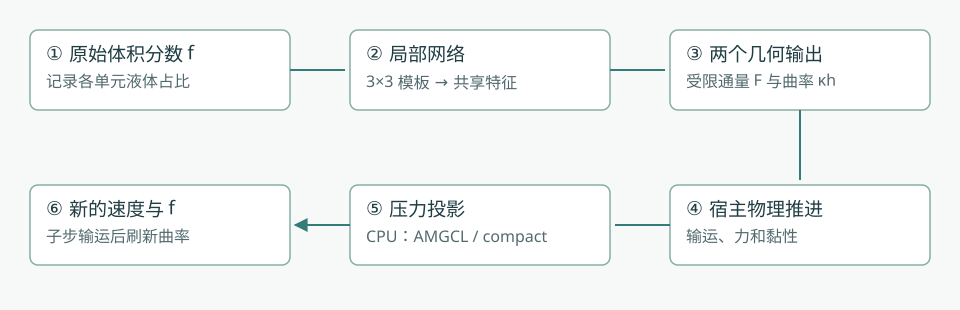
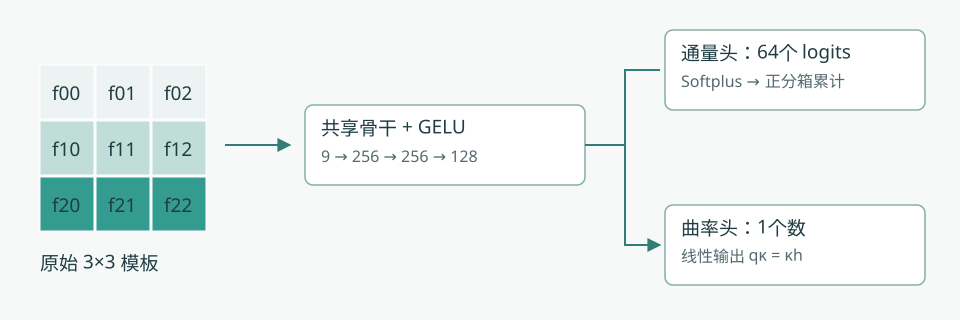
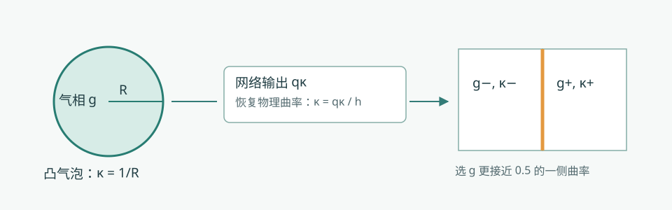
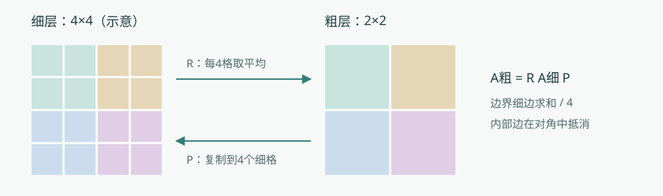
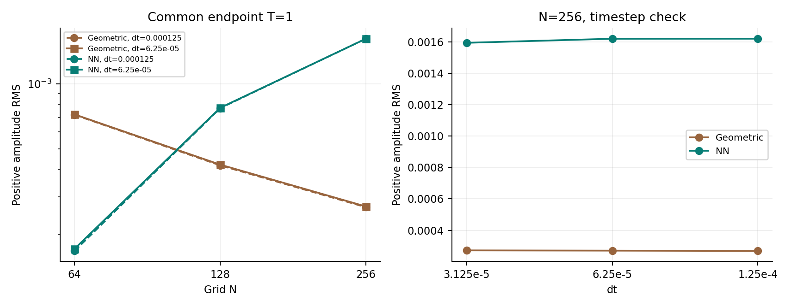

从体积分数到两相流：PLIC-VOF 详细方法
这份说明从“一个格子里有多少液体”开始，依次说明训练数据、网络通量、曲率、表面张力、压力求解和实验验证。公式采用 Overleaf 方法快照中的定义；重训与补充实验另行标明。阅读时可以先看图和例子，再看推导。
1. 整体路线：我们究竟计算什么？
VOF 是 Volume of Fluid，即体积分数法。传统 PLIC（分片线性界面重构）通常先在混合单元内重建一条直线，再计算穿过网格面的相体积。本项目的神经路径直接从局部体积分数预测通量和曲率；运行时不重新构建 PLIC 界面，也不启用几何锐化。PLIC-VOF 是项目名称，不表示神经路径仍然逐格执行传统 PLIC。


图1｜实线框是实际方法组成。通量与曲率共享网络权重，但宿主分开调用；压力后端在 CPU 上运行。示意图概括依赖关系，具体更新时间见第8节。
本方法限定为二维、均匀正方形网格。每格边长为 ，面积为 。二维的“体积”应理解为面积；能量按单位出平面厚度解释。
| 符号 | 意思 | 在程序里的位置或单位 |
|---|---|---|
| 、 | 液相、气相体积分数 | 无量纲，单元中心； 全气， 全液 |
| 、 | 速度、压力 | 法向速度在网格面，压力在中心，MAC 交错网格 |
| 、 | 流体时间步、VOF 子步 | 子步用于使输运满足其步长约束 |
| 面速度扫过的单元宽度比例 | ，本地公式要求 | |
| 、 | 无符号、带符号相通量 | 均按单元面积归一化；实际相面积为 |
| 流出相占供体相总量的比例 | ，不是扫掠带的平均液相率 | |
| 、 | 无量纲曲率、物理曲率 | ； 单位为长度的倒数 |
| 压力线性系统中的缩放未知量 | ，与 是两个不同量 |
2. 物理方程：网络没有替代哪些工作？
不可压缩条件、液相输运和动量方程分别为：
第一式要求一个单元流入和流出的总体积平衡。第二式追踪液体。动量方程右侧依次是压力、黏性、重力等体力与表面张力。网络的两个输出分别参与液相输运和表面张力计算。
物性采用一个平滑副本，降低物性跳跃直接进入离散计算时的突变：
边界缺失邻居用中心值补齐。这里的平滑只用于密度和动力黏度；保存的 和网络输入仍使用原始体积分数。材料平滑、网络输入和界面锐化是不同操作。
3. 训练数据：标签怎样得到？
训练使用解析合成几何。它教网络回答局部几何问题，不使用整段真实流体轨迹作为监督，也没有端到端求解 Navier–Stokes 的训练损失。
- 生成局部几何。课程记录使用局部三次函数界面 ，变化位置、斜率与弯曲程度；另有原始合成样本回放。
- 积分得到9个输入。把几何与九个单元分别求交并积分，获得原始 体积分数。
- 积分得到通量标签。在向右流出的标准方向，取中心格右侧宽为 的扫掠带，计算带内相面积 。
- 计算曲率标签。找到中心格内距离其中心最近的界面点，在这个点计算解析曲率。它不是格心外推值，也不是整段界面的弧长平均。
- 做有标签的增广。相互补把 换成 并相应改变曲率符号；转置样本使用解析横向通量，不能简单把原方向通量标签原样搬过来。
- 按几何分组切分。同一基础几何的相关样本放在同一组，以免相似样本跨入训练与验证；按验证指标挑选 checkpoint。
这里 是相内为1、相外为0的指示函数； 用于有相含量的训练样本。比如 ，扫掠带带走单元面积的0.12，则 、：供体内20%的液体流出。
对于前景位于图像函数下方的约定：
这里 对应上述最近界面点。相互补时解析曲率反号。九个面积平均数不能唯一确定格内界面，因此学习的是特定训练分布下的局部近似；不能声称任意几何都可由九个数精确恢复。
4. 共享网络：九个数如何变成两个答案？


图2｜九宫格是原始体积分数。先把流出方向变为“向右”，再应用共享骨干。64个正分箱描述相量在扫掠方向上的分布，单独的线性头给出无量纲曲率。示意色块不代表某次实验预测。
最终模型的结构是 ，每个隐藏层后使用 GELU 激活；两个线性输出头分别为 和 ，共109,633个可训练标量。输入没有坐标，也没有统计标准化。Courant 数 不进入共享骨干，而在后续分箱积分时使用。
推理先把供体模板旋转或反射到向右流出方向。模型还对原模板 和上下行交换模板 分别计算并平均。这一上下反射属于推理时结构性约束；相互补、90度旋转关系主要靠损失鼓励，不能说它们在推理时严格满足。
5. 通量：先保证正性，再保证装得下
5.1 64个正分箱的直观意思
把中心格沿流出方向分为64条。每条有一个严格为正的权重。 增大时，扫过更多条带，累计带走的相量便不会减少。
Softplus 把任意实数变成正数； 保证最小正量。 表示第 个条带被扫过多少，未扫过为0，完整扫过为1，部分扫过则线性取值。条带编号从流出面开始理解。分母对64条的总权重归一化，所以 时 ， 时 。
5.2 为什么还要做容量投影？
扫过的条带面积只有 ；即使供体有很多液体，也不能把比条带更大的液体面积塞进去。另一侧留下的液体，也要装得进未扫过面积 。
举例：、，假设网络给 ，则原始通量为0.42。容量上限是0.3，下限是0，所以最终通量为0.3；留下0.3的液体，未扫过部分容量为0.7。若 、，下限为0.2：至少要带走0.2，才能让剩余液体装进0.7的空间。
动手试一试：拖动扫掠宽度
这是教学用正分箱分布，不是训练模型输出。保持模板对应的中心含量固定，观察通量随 C 的变化。
固定 时，每个正分箱的累计量单调不减；容量上下界也单调不减，所以投影后的通量对 仍单调不减。这保证的是合格模板上的局部通量性质，不是完整两方向推进的全局最大值原理，也不是对九个输入分数的整体单调性。
5.3 近纯单元怎样处理？
| 中心体积分数 | 实际分支 | 需要记住的区别 |
|---|---|---|
| 调用网络并施加容量限制 | 两个端点都允许推理；邻居不按此门限截断 | |
| 采用空相通量 | 没有调用几何重构作为后备 | |
| 采用满相通量，大小为 | 将近满单元当作满相计算通量 |
这个门控不把已保存的 自动改为0或1。例如 被跳过推理，仍可能作为低含量尾迹留在场中。上述局部容量定理也不直接适用于把近满单元视为满相的旁路。
6. 输运更新：每个面只记一笔账
相邻两个格子使用同一个面通量：从左格扣除多少，就给右格加上多少。带符号通量为 。
在每个 VOF 子步开始先固定压缩指示量 。对方向 的扫掠为：
- 用扫掠开始时的场提取模板，决定各面的供体、流出方向和 。
- 每个面计算一次带符号通量，供相邻单元共享。
- 计算上式中的通量差和方向压缩项。
- 每次扫掠后做端点清理：低于 设为0，高于 设为1，有限越界值也被清理；非有限数报错。
- 执行另一方向；相邻子步轮换 x–y 和 y–x 顺序。一个子步内两个方向使用同一份固定的 。
清理之前，内部面通量在全局求和时抵消；若面速度严格离散无散，两个方向的压缩项也相互抵消。这解释了条件性的守恒结构。实际清理可能改变相面积，所以最终必须测量面积漂移，不能从“输出都在0到1之间”推出“没有发生裁剪且精确守恒”。 清理阈值和0.002推理门限相差很多，作用也不同。
7. 曲率与表面张力：弯曲如何改变速度？


图3｜圆越小，曲率越大。曲率头预测 κh，宿主除以 h 恢复物理单位；每个面的力使用两侧中更接近混合状态的那个单元曲率。图中气泡和网格位置为教学示意。
例如 、网络输出 ，则物理曲率为4；对于半径0.25的二维圆，曲率也是 。网格加密时同一个物理圆的 应保持4，但 随 减小。这说明无量纲输出本身不等于网格一致性，仍要对固定物理形状重新积分并验证。
曲率头是无界线性输出，不保证预测正负号或大小一定正确。它也采用上下反射平均，不依赖 ；调用共同模型接口时给 。
相的约定必须一致。动力学保存的是液相 ，但曲率使用 。模型对“所表示相的凸区域”取正曲率，因此宿主实际得到凸气相为正的曲率，不再额外翻转符号。对不在 的中心气相率，曲率设零，没有邻居延拓。
其中 是表面张力系数； 从两侧 更接近0.5的单元选取。距离相等时选 plus 侧，NaN 曲率按0处理。这里没有对两侧曲率做算术平均。门控和这个二选一规则都有离散切换，局部曲率的微小变化可能通过选择与力反馈影响长时动力学。
输运模板边界采用最近单元延拓；曲率先同样提取，再在场景提供时用显式 ghost 分数覆盖域外项。不能把所有算例都描述成周期边界或完全相同的 halo。
8. 一个完整流体时间步，先后顺序是什么？
下面描述常规推进路径；启动阶段还有专门的投影和黏性处理。曲率缓存更新时刻也属于方法的一部分。
- 更新物性：由当前 计算 、密度和黏度。
- 准备动量输运速度：动量对流启用时，先预测并投影输运速度，用于动量对流。
- 计算力与黏性：施加重力、已缓存曲率对应的表面力以及宿主原有黏性离散，形成待投影速度。
- 主压力投影：求解压力并修正面速度，使其接近离散无散。
- 追赶 VOF 时钟：必要时执行多个输运子步；每个子步按第6节做两方向扫掠。
- 刷新曲率：在这些 VOF 子步之后用更新的气相分数计算曲率，供后续力计算使用。
- 保存实际时钟和诊断：记录面积、速度、压力、求解残差和各阶段耗时。
因此，一个流体时间步可能包含不止一次压力求解。共享骨干也不意味着通量和曲率在整个求解器中只做一次联合前向。更换 AMGCL 与 compact 后端时，以上宿主流程和固定网络保持一致。
9. 压力投影：怎样让流体不被凭空压缩？
9.1 从速度散度形成线性系统
把未投影面速度记为 。相邻单元间系数为两侧密度倒数的均值：
是相对单元的向外方向符号。右端
描述当前净流出，压力差修正各个面速度。由于采用了缩放未知量
，这里不再显式写一个
。没有外部邻居的边不添加系数；法向边界速度在投影前后归零。
9.2 为什么固定一个压力值？
压力加一个常数不改变速度，因此矩阵有常数零空间。compact 固定 ：把第0行和列耦合都移除、对角设1、，但保留邻居原有对角系数。正密度和连通网格下，这得到对称正定系统，适合 PCG。
每条无向边只算一次。固定常数自由度后，非零自由向量具有正能量。原 AMGCL 路径只替换第0行，保留第0列的其他条目；完整存储矩阵因此不是对称的，尽管固定分量为零时对应相同的自由方程。两种存储矩阵不能称作逐项相同。
9.3 三个数组与精确粗化


图4｜把相邻细格归为一个粗格。延拓把粗值复制回去，限制对细值取平均。粗算子必须由 RAP 得到，不能随意用另一套近似系数替换。
每层用三个 double 系数数组存储：对角 ，以及正 x、正 y 方向的负非对角系数 。反向连接复用邻居数组中的条目，不为每条边重复存储一般 CSR 索引。工作向量和最粗层直接求解仍需额外内存。
每个偶数维度独立减半，形成 、 或 聚合；同一层的聚合细格数 相同。设 为复制延拓，则：
相邻粗格的边系数是穿过共同边界的细边系数之和再除以 ；对角中的内部负边项抵消聚合内部连接。全粗化的1/4和半粗化的1/2都要保留。粗层不再次固定一个点，以免破坏 恒等式。最细层预条件器还限制到第0分量为零的自由子空间。
9.4 多重网格怎样帮助 PCG？
先用直觉理解：细网格上的局部交替误差比较容易消除，跨越整个区域的缓慢误差却很难靠局部迭代消除。把问题搬到粗网格后，原来的大范围误差变成小范围问题；修正粗解再传回细网格，可以减少外层求解次数。
SOR 是依次更新单元压力的松弛迭代；red–black 把棋盘格的红格、黑格分组更新。PCG 是预条件共轭梯度：由多重网格给出近似修正，再通过外层迭代消除剩余误差。对称正定意味着矩阵对称、非零自由向量对应的二次型为正，是这里采用 PCG 的数学条件。
每个周期先做两遍 red–black SOR 平滑，再做粗网格修正，最后反序 black–red 平滑两遍；松弛参数为1.5。默认 W2 周期递归修正两次，第二次从第一次的粗解继续，粗修正倍率为2。未知数不超过64或无法继续减半时，用 Eigen SimplicialLDLT 精确解最粗系统。
若对称正定子周期在能量尺度中的特征值 属于 ，两次连续残差修正对应：
这个条件配合正反序平滑和精确粗解，用于默认 W2 的构造；不能推广为任意修正倍率都稳定。实现限制 V-cycle 倍率不超过1，W2不超过2，并用独立小矩阵检验预条件器对称正定性。
PCG 从零压力开始，每次投影重建层级。默认最大500次迭代，相对容差 ，绝对容差0；接受条件是重新计算的真实残差：
递推残差看似达标但真实残差不达标时，替换残差并重启搜索方向；零右端返回零解，不收敛则报告失败。场与系数为 double，点积用 long double 累积。当前 compact 压力求解在 CPU 上，没有已完成的 GPU 压力结果；大奇数尺寸可能过早进入昂贵的粗层直接求解。
10. 损失、课程与部署：训练具体怎么做？
10.1 每一项损失在纠正什么？
下面将代码里的均方误差写成期望形式。、 是解析标签； 是90度旋转；期望表示训练小批次平均。
前两项学习标签。相互补通量项要求两相扫过面积之和接近扫掠带面积 ；两项曲率软约束要求换相反号、旋转不变。条带项相当于监督扫掠带平均相含量，避免小 时信号被普通通量误差削弱。平面项提供确切零曲率监督；所用平行薄层构造不附加通量标签，因为单元平均数不能唯一决定层内排列。
末阶段保留的加权关系为：
这些软项影响训练，不是推理时硬投影。容量限制是宿主中的独立操作，不能把损失写成对完整两相流的严格守恒证明。
10.2 完整课程记录与身份区别
Overleaf 记录的历史冻结模型名为 edges64_v4_weak；它的完整末阶段数据和日志未全部归档。此次补充使用可追踪的独立重建模型及另外两组完整课程，不把新模型冒充历史原权重的精确复现。下面的13阶段表来自本地保留课程；bootstrap 为60 epoch、初始骨干128–128–64，后在 widening 阶段扩展为最终256–256–128。
| 阶段 | 数据组 | 步数 | 起始学习率 | 平滑样本比例 | 主要设置 |
|---|---|---|---|---|---|
| v1 | balanced | 6,000 | 0.0001 | 90% | 基础平滑几何 |
| v2 | weak | 30,000 | 0.0002 | 98% | 弱曲率样本 |
| v3 | weak | 30,000 | 0.0001 | 98% | 弱曲率重采样 |
| v4_wide | weak | 20,000 | 5e-05 | 98% | 扩大骨干 |
| v8 | weak | 30,000 | 0.0001 | 98% | 提高曲率权重 |
| v11 | capillary | 30,000 | 2e-05 | 98% | 相互补配对 |
| v12 | capillary | 30,000 | 1e-05 | 96% | 转置配对，曲率权重1000 |
| v13_flux | capillary | 20,000 | 0.0002 | 50% | 只训通量 |
| face_flux | capillary | 15,000 | 0.0002 | 80% | 增加扫掠带监督 |
| edges | edges | 20,000 | 2e-05 | 98% | 扩展近纯覆盖 |
| planar | edges | 15,000 | 2e-05 | 95% | 增加平面零曲率监督 |
| flux_replay | edges | 15,000 | 0.0002 | 50% | 只训通量并回放 |
| weak | edges | 15,000 | 1e-05 | 95% | 最终弱曲率细化 |
末阶段从 flux_replay 接续，15,000个 AdamW 步，batch 1024，学习率从 降到 ，平滑几何样本占95%，其余回放旧分布。历史末阶段记录种子为20261020；两次新增完整课程种子为202611051、202611052，只改种子及输出路径，沿用归档数据、损失与各阶段设置。
弱曲率重采样使用既有权重 ，它改变抽样频率而非损失公式。控制末阶段取 ；新增探索只改变已有软项权重或该采样尺度，没有增加新的推理原理。
10.3 导出与数值精度
- 按各阶段训练验证规则保存 checkpoint，记录 SHA-256 和配置；最终测试集不参与选 checkpoint。
- 导出 ONNX，输入输出均为 float32。Softplus 内部采用稳定 float64 计算后转回 float32，不能据此把整个网络称作双精度。
- CUDA 关闭 TF32，检查浮点算子的设备放置，防止静默退回 CPU；宿主流场和压力系数仍是 double。
- 比较原生 CUDA 与 Torch 的曲率输出；本轮物理场最大无量纲输出差约 ，低于所设 检查阈值。
- 通量、曲率加载同一个模型的独立会话；完整记录模型、执行文件和环境，不能只用分支名标识实验。
11. 实验一步步怎样验证？
11.1 先分清比较对象
| 比较 | 固定什么 | 回答什么 |
|---|---|---|
| 同神经模型 + AMGCL / compact | 模型、宿主积分和神经设备 | 更换压力后端后的成本与轨迹影响 |
| 神经路径 / 独立 Aphros | 初值尽量对齐，保留各自实际算法 | 两种完整部署的观测差异，不能单独归因网络 |
| 同课程不同种子 | 归档数据、结构与课程 | 初始化、抽样及验证分组共同变化的敏感性 |
| 原参数 / 训练探索 | 同一接续点及训练设置，仅改指定参数 | 原方法内部能否获得可重复的改善 |
Aphros 参考为几何 VOF、Weymouth 输运、粒子曲率，二维使用一条7粒子链、长度4h、最多20次迭代；此构建使用 Youngs 法向，没有启用高度函数法向修正。邻近线段收集使内部有效原始分数依赖可达7×7，不是与神经3×3完全等信息的对照。其压力是原生无预条件共轭梯度，阈值 基于原生范数，并非 SimLiquid 的相对残差；配置中的 tol=1e-4 是流体外层参数。
11.2 从局部到动力学的验证顺序
- 压力独立验证：独立稀疏组装、模板乘法、固定压力自由度、每层 、小系统预条件器对称正定；原归档含312项性质检查、55个线性案例及捕获系统重放。
- 解析局部验证：旧199场作为开发回归集；新封存1,800个基础几何模板，再生成5,400个相关旋转样本，旋转不算独立样本。新模板与五个归档训练数组按 float32 模板精确去重，未发现重复；这不等于严格分布外泛化证明。
- 固定物理形状加密：64个物理几何场覆盖64、128、256、512网格，逐网格重新积分，区分物理曲率误差与单纯除以 的单位放大。
- 单独输运：关闭压力、曲率、重力、黏性和锐化，给定解析面速度；记录 MAE、面积漂移、混合格数、门控外残留和实际推理工作。
- 受控物理参考：静滴检查二维 Laplace 压差；毛细波比较线性理论正幅值；气泡比较 MooNMD 数值基准的质心、升速和圆度。
- 网格与时间步分离：毛细波先做3网格×2时间步×2方法共12项，最细网格发现步长敏感后只追加一次减半的两方法对照，共14项，所有结果保留。
- 训练稳定性：两次完整重训，加上重建基线共3个模型，形成21项物理观测，避免只选最好种子。
- 成本：补充输运矩阵为2场景×3网格×2 CFL×2方法×3重复=72条。停止本轮其他计算后逐项运行，绑定同两个逻辑 CPU、轮换方法顺序；神经路径额外使用RTX5090。
- 探索与冻结：只在旧开发集筛选已有软权重0.1/1/10和采样尺度0.0005/0.008；封存集只评分，不反过来选模型。
11.3 误差指标怎样读？
气泡取 ，其他相面积按所研究相定义。MAE 衡量全场分数误差， 衡量总面积变化，二者不能互相替代。平移可在全时段用解析圆盘单元平均真值；反转涡旋只在初始与返回时刻具有本轮使用的解析圆盘参考，过程中的另一数值解不是真值。
平面真曲率为0，不能报告除以零的相对误差，只报告绝对误差。比较不同估计器时同时保存共同支持单元评分与全部混合格评分，防止掩码差异造成误导。
静滴二维理论值为 ，不是三维球的 。本设定 ，目标压差4；数值值用 与 两区平均压力作差，另看寄生速度。
毛细波从列积分得到波面，再提取基频：
在论文给定的波长及坐标约定下， 是归一化正幅值，sinc 修正单元平均。参考表只给正幅值，没有相位真值；不能据此声称已测相位误差。补充报告中的正幅值 RMS 需按各表注明的绝对或归一化口径阅读。
气泡镜像半域后，用 计算圆度，并报告质心与相加权升速。MooNMD 是高精度数值基准，不是解析解。气泡补充表同时保留原 PLIC 周长口径和0.5等值线口径，不通过替换指标删掉不利趋势。
计时分别记录推进与整个进程：后者包含启动、模型加载、输出。三次重复报告中位数和范围，不当作置信区间。CPU 几何与 CPU+GPU 神经路径的比较代表实际资源组合；不能把压力替换的收益挪作神经界面的等误差加速。
11.4 原论文动力学算例如何初始化？
以下参数属于 Overleaf 快照中的原动力学矩阵；新增长时毛细波的14项配置单独列在补充报告，不能与原矩阵混作一次计算。
| 算例 | 区域、初值与物性 | 网格、时间步与终点 |
|---|---|---|
| 静态液滴 | ，中心(0.5,0.5)，半径0.25；两相密度1000、黏度1，表面张力1，重力0 | 64²、128²；Δt=0.001，T=0.5 |
| 上升气泡 | 原生半域 ；气相半圆中心(0.5,0)、半径0.25；液/气密度1000/100、黏度10/1，σ=24.5，重力(-0.98,0) | 128×32、256×64；自适应，初始步长1e−6；请求T=3 |
| 毛细波 | ；液体在 上方；两相密度1、黏度0.0182571749236，σ=1，无重力 | 64²、128²；Δt=τ/20、τ/80；T=120τ，τ=1/53.508815629 |
| 落滴入池 | 移到 表述：液池y≤0.35，液滴中心(0.5,0.55)、半径0.1；水–空气参数，σ=0.0728 | 64²、128²；Δt=0.001、0.0005；T=0.6；短时测速另到0.1 |
| 静水 | 移位坐标中液体y≤0.53；水–空气参数，σ=0 | 64²、128²；Δt=0.0005、0.00025；T=0.1 |
| 溃坝 | 移位坐标中液体占x≤0.3且y≤0.6的矩形，面积0.18；水–空气参数，σ=0.0728 | 64²、128²；Δt=0.0005、0.00025；T=0.6 |
水–空气参数为液/气密度998.2/1.204 kg/m³、动力黏度0.001002/0.00001825 Pa·s、重力(0,−9.80665) m/s²。原坐标中的落滴、静水与溃坝域为 ；表中平移只是方便描述，未修改计算域。
所有算例从零速度、零保存压力开始，静滴与静水也不是从解析平衡压力启动。静滴和气泡用线性化 level-set 单元切割初始化；落滴共享宿主导出的初始分数；静水、溃坝用精确平面或矩形交叠；波面沿水平用256中点积分。不能把它们都说成精确圆盘面积积分。
气泡半域镜像映射为 。除波面外，原生x边界无滑移、y边界不可穿透自由滑移；波面主隐式黏性项采用全自由滑移，但继承的转置项保留x墙处理。Aphros 在气泡、落滴、静水与溃坝保留原生锐化（CFL 0.1），神经路径全部关闭锐化；这些差别限制跨代码归因。自适应轨迹按实际物理时钟对齐，不按帧号假设时间相等。
12. 创新点怎样准确表述？
这里的“创新点”指本项目可主张的方法贡献与组合设计。神经 VOF 通量、神经曲率、聚合多重网格等已有研究基础；本页不作“全球首次”的优先权结论。
| 可表述的贡献 | 具体做法与意义 | 依据及适用边界 |
|---|---|---|
| 受约束的联合局部通量–曲率算子 | 同一3×3表示产生64个正分箱和 κh；用容量投影补齐正分箱本身缺少的扫掠容量界 | 可证明合格模板上通量对 C 单调、端点正确且满足局部容量；不能推出完整格式收敛 |
| 代数一致的紧凑 CPU 压力替换 | 三系数数组、对称固定压力自由度、精确 RAP、对称 W2 与真实残差 PCG 共同实现 | 组件性质检查与配对计算支持；属于二维均匀网格实现，不等于复现完整自适应三维框架 |
| 能分离收益来源的耦合验证 | 同模型只换压力、解析局部测试、物理参考、种子与 h/Δt 分离、等误差目标成本 | 揭示压力加速和神经界面精度并非同一结论；保留负结果是可信度贡献，不宣称新物理定律 |
建议论文贡献段这样写：本文构建了一个由共享局部表示驱动的通量–曲率模型，以正分箱累计与容量投影给出明确的局部通量约束；实现并独立验证了保持代数粗化一致性的紧凑 CPU 压力后端；通过组件验证、物理参考与配对成本评估，区分压力替换收益和神经界面仍存在的一致性、精度及训练敏感性限制。
不能写成已完成的创新：任意网格一致收敛、完整算法严格最大值原理、端到端能量守恒、GPU压力求解、三维拓扑通用性、全面优于传统方法、或恢复了缺失的历史训练记录。这些没有对应的当前证据。
13. 实验告诉我们还缺什么？


图5｜实际补充实验图，不是方法示意。横纵轴和方法图例按原报告保留；它展示不同网格与时间步下的表现，不能从单个有利点拟合整体收敛阶。完整数据见补充页。
三训练实例在128网格毛细波的正幅值 RMS 相差约6.2倍；256网格再次减半时间步后，神经终态 VOF 差仍约 。这说明需要优先解决训练稳健性和细网格一致性，平均局部误差相近也不保证长时动力学接近。
原采样尺度改为0.008时，旧开发集综合曲率分改善约4.38%，未达到本轮预先规定的至少5%改善门槛；投影通量 MAE 还必须不恶化超过5%。这是实用筛选规则，不是统计显著性检验。所有分支均未通过综合门槛，默认模型保留。
下一步可研究：固定物理几何的加密一致性训练、对称性和门控切换的受控设计、多种子稳健性、以及误差目标下的成本。它们是待检验方向；如果改变当前原理、门限或力的选择规则，应作为新方法分支重新对照，而不能回写成现有方法已经实现。
14. 来源、版本与复核入口
本页核对了 Overleaf 本地方法快照 02-neural-method.tex、03-pressure.tex、04-experiments.tex、appendix.tex、引言与讨论，以及实际 train.py、train_smooth.py、保留课程、补充实验脚本和完成报告。网页不修改 Overleaf 原稿。
历史论文 checkpoint SHA-256 为 9492e940778efb85e12ae502118d58adb6262c5dbd298c978804ee88c5923a9b，对应 ONNX 为 6ba6aa53931dcb8286686b914e0901a70037e0521959f2fd3918cd452f5bf113。本轮重建基线身份另见证据索引，不能只因架构、名称相近就当成同一权重。网页发布指标和方法图，本机归档另保留原始场、checkpoint、日志与命令。